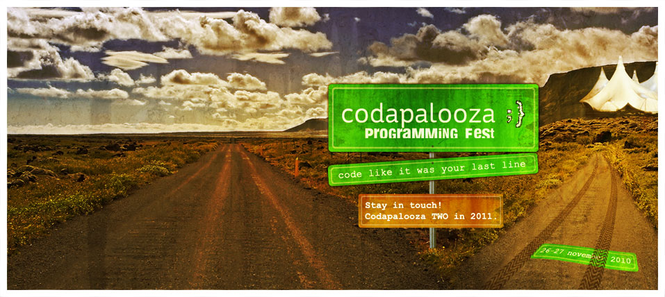

@{
    ViewBag.Title = "Home Page";
}

<span 
  class="Apple-style-span" 
  style="border-collapse: separate; color: rgb(0, 0, 0); font-family: 'Times New Roman'; font-style: normal; font-variant: normal; font-weight: normal; letter-spacing: normal; line-height: normal; orphans: 2; text-align: -webkit-auto; text-indent: 0px; text-transform: none; white-space: normal; widows: 2; word-spacing: 0px; -webkit-border-horizontal-spacing: 0px; -webkit-border-vertical-spacing: 0px; -webkit-text-decorations-in-effect: none; -webkit-text-size-adjust: auto; -webkit-text-stroke-width: 0px; font-size: medium; "><div 
  style="background-color: transparent; ">
  <span id="internal-source-marker_0.37880766368471086" 
    style="font-size: 11pt; font-family: Arial; color: rgb(0, 0, 0); background-color: transparent; font-weight: normal; font-style: normal; text-decoration: none; vertical-align: baseline; white-space: pre-wrap; ">
  Join us for Codapalooza 2</span><span 
    style="font-size: 11pt; font-family: Calibri; color: rgb(0, 0, 0); background-color: transparent; font-weight: normal; font-style: normal; text-decoration: none; vertical-align: baseline; white-space: pre-wrap; ">—</span><span 
    style="font-size: 11pt; font-family: Arial; color: rgb(0, 0, 0); background-color: transparent; font-weight: normal; font-style: normal; text-decoration: none; vertical-align: baseline; white-space: pre-wrap; ">.NET 
  Programming Fest: 24 hours of code and music </span>
  <br />
  <span style="font-size: 10pt; font-family: Arial; color: rgb(0, 0, 0); background-color: transparent; font-weight: normal; font-style: normal; text-decoration: none; vertical-align: baseline; white-space: pre-wrap; ">
  Codapalooza 2 offers 24 consecutive hours of coding, coding, coding and coding, 
  surprises and fun. Only but good times!</span><br />
  <br />
  <span style="font-size: 10pt; font-family: Arial; color: rgb(0, 0, 0); background-color: transparent; font-weight: bold; font-style: normal; text-decoration: none; vertical-align: baseline; white-space: pre-wrap; ">
  Why you can’t miss Codapalooza 2:</span><ul>
    <li style="list-style-type: disc; font-size: 11pt; font-family: Arial; color: rgb(0, 0, 0); background-color: transparent; font-weight: normal; font-style: normal; text-decoration: none; vertical-align: baseline; ">
      <span style="font-size: 10pt; font-family: Arial; color: rgb(0, 0, 0); background-color: transparent; font-weight: normal; font-style: normal; text-decoration: none; vertical-align: baseline; white-space: pre-wrap; ">
      for the love of code and music</span></li>
    <li style="list-style-type: disc; font-size: 11pt; font-family: Arial; color: rgb(0, 0, 0); background-color: transparent; font-weight: normal; font-style: normal; text-decoration: none; vertical-align: baseline; ">
      <span style="font-size: 10pt; font-family: Arial; color: rgb(0, 0, 0); background-color: transparent; font-weight: normal; font-style: normal; text-decoration: none; vertical-align: baseline; white-space: pre-wrap; ">
      because it’s a unique event where you will push your coding limits</span></li>
    <li style="list-style-type: disc; font-size: 11pt; font-family: Arial; color: rgb(0, 0, 0); background-color: transparent; font-weight: normal; font-style: normal; text-decoration: none; vertical-align: baseline; ">
      <span style="font-size: 10pt; font-family: Arial; color: rgb(0, 0, 0); background-color: transparent; font-weight: normal; font-style: normal; text-decoration: none; vertical-align: baseline; white-space: pre-wrap; ">
      to rock it out with more than 50 of Montréal’s best .NET developers</span></li>
    <li style="list-style-type: disc; font-size: 11pt; font-family: Arial; color: rgb(0, 0, 0); background-color: transparent; font-weight: normal; font-style: normal; text-decoration: none; vertical-align: baseline; ">
      <span style="font-size: 10pt; font-family: Arial; color: rgb(0, 0, 0); background-color: transparent; font-weight: normal; font-style: normal; text-decoration: none; vertical-align: baseline; white-space: pre-wrap; ">
      because this event allows for skilled individuals (not necessarily hackers) to 
      create software </span></li>
  </ul>
  <span style="font-size: 10pt; font-family: Arial; color: rgb(0, 0, 0); background-color: transparent; font-weight: bold; font-style: normal; text-decoration: none; vertical-align: baseline; white-space: pre-wrap; ">
  But don&#39;t just take our word for it. Check out the video of our first edition of 
  Codapalooza. </span>
  <br />
  <iframe src="http://player.vimeo.com/video/17248221" width="604" height="340" frameborder="0"></iframe></div>
</span>
